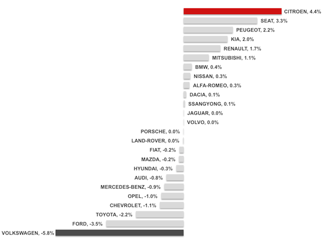

Kia, leader du marché des véhicules particuliers

Deux ans après son arrivée en Tunisie, KIA devient leader des ventes de véhicules particuliers au premier trimestre de l'année 2012.
La marque coréenne représentée par CITY CARS rencontre en effet un franc succès en Tunisie, avec les nouvelles Rio 4 & 5 portes qui représentent 55% des ventes de KIA avec 600 unités écoulées au 1er trimestre de 2012, ainsi que la Picanto qui devient leader du segment des mini-citadines avec 200 unités vendues et représentant 20% des ventes de la marque au 1er trimestre de 2012. Pas étonnant, à voir les nombreuses options proposées sur ces nouveaux modèles, à des prix très accessibles, sans oublier la garantie de 5 ans offerte par KIA sur toute sa gamme.

Avec une hausse des ventes de près de 89% soit 1092 véhicules particuliers vendus par rapport au premier trimestre de l'année 2011, Kia détient désormais 15% de part de marché en 2012 (13% au premier trimestre de 2011), suivie par Renault avec 14,3% de part de marché, Peugeot (13,4%), Fiat (10,7%), Volkswagen (10,5%), Citroen (10,4%) et Ford (7,6%).
KIA - Evolution des ventes T1 2011/2012
Cependant en termes d'évolution de part de marché par rapport au 1er trimestre 2011, c'est Citroën qui occupe la première place avec 4,4%, suivie de Seat (3,3%) et de Peugeot 2,2%. Volkswagen en revanche enregistre la plus forte baisse avec 5,8%.
Evolution des parts de marchés par marque - T1 2011/2012

Pour conclure, on notera une reprise globale du marché de l'automobile en Tunisie, avec une augmentation des ventes de près de 65% par rapport à la même période de l'année 2011.


vos commentaires donnez votre avis